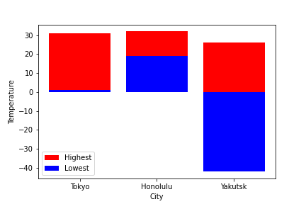
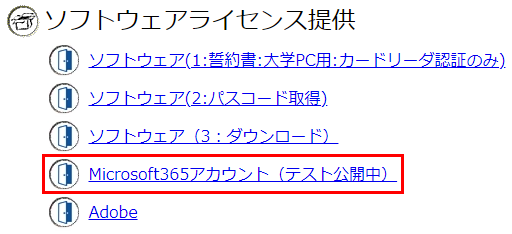

雑談
- 前回の授業アンケート結果。
- 教員が本当に欲しいのは「ほめ言葉」よりも「改善提案」である。(ただし、無理なものはムリ)
0. 前回までのあらすじ
- LaTeX 演習をおこなった。
- 節の追加 (
\sectionコマンド) - 図の埋め込み。
- 節の追加 (
- Zipファイルの使い方について学習した。
演習 6-1. 前回の復習
- Zipファイル形式は普通のファイルと比べて何が違うのか? 2つあげよ。
- LaTeX で、文書の最後に必ず書かねばならないものは?
\end{document} - なぜ画像を記録するのに PDF, JPEG, PNG など違う 形式がいくつも存在するのか?
1. 中課題2 の説明 (つづき)
中課題2. LaTeXによる論文の再現 (8月1日締切)
- 提出期限: 8月1日 (3週間後)
大規模社会ネットワークからのクラスタ構造の抽出 を
LaTeX で印刷するのに必要なファイル一式を Zip 形式で提出せよ。(計20点)
(まだ現在までに習ったことだけは完成できないが、作業を始めたほうがよい。)
やりかた:
- 材料となるファイル
kadai-latex-overleaf.zip
をダウンロードする。
(注意: Macを使っている場合は、上のリンクを直接クリックしないこと! 前回の資料参照) - ダウンロードしたフォルダ中に含まれている
hints.pdfを見る。 -
main.texを修正して (空欄 の部分を埋める)、goal.pdfと同じになるように加筆する。 - matplotlib で作成した図2 〜 図6を挿入する。
- 完成したプロジェクトをまるごと zip ファイルにまとめ、 T2SCHOLA から提出する。
採点基準:
- すべてのファイルが揃っており、リコンパイル時にエラーが出なければ 5点。
- 図と表がきちんとできていれば +5点。
- 数式の埋め込みがきちんとできていれば +5点。
-
\citeや\refを使った引用ができていれば +5点。 - (多少のミスや、図が完璧に元論文と同じにならないことは 減点対象とはならない)
参考資料
- クラス共通: LaTeX サポートサイト
- クラス共通: 科学技術文書執筆
- LaTeX Wikibook (英語)
2. LaTeX の高度な技
2.1. 表の埋め込み
-
\begin{tabular} 〜 \end{tabular}を使う:\begin{center} \begin{tabular}{lrr} 品名 & 値段 & 数量 \\ チョコレート & 10 & 300 \\ クッキー & 150 & 20 \\ アイスクリーム & 200 & 4 \\ \end{tabular} \end{center} - 欄の数・書式は、ここで決まる:
\begin{tabular}{lrr}l…左寄せ, r…右寄せ, c…中央寄せ。 - 縦の罫線を入れるには:
\begin{tabular}{|l|r|r|} - 横の罫線を入れるには:
\hline
演習6-2. 表の作成
- 以下の表を LaTeX で作成せよ:
City Highest ℃ Lowest ℃ Tokyo 31 1 Honolulu 32 19 Yakutsk 26 -42 -
.texの最初の部分:\documentclass[a4j,11pt]{jarticle} \usepackage[dvipdfmx]{graphicx} \begin{document} \begin{center} \begin{tabular} ...
2.2. 図表へのリンク
- 図や表が30枚ぐらい入っている文章を考える:
詳しくは、表.17 (第6章) を参照のこと。…どこなのよ?
- LaTeX では、図・表・節に名前 (ラベル) をつけておき、 別の場所からリンクできる。
- 図を参照する:
図 \ref{fig:neuman time diff} を参照せよ。これが、こうなる:図 1 を参照せよ。 - 図にラベルをつける:
\begin{figure} \begin{center} \includegraphics[width=0.80\linewidth] {fig2-cnm-joins-time-series.pdf} \caption{ネットワークの解析に要した時間の時系列遷移} \label{fig:neuman time diff} \end{center} \end{figure} - 図を参照する:
図 \ref{fig:neuman time diff} を参照せよ。 - 表にラベルをつける場合:
\begin{table} \begin{center} \begin{tabular}{lrr} ... \end{tabular} \end{center} \caption{各都市の気温} \label{tbl:temp} \end{table} - 節にラベルをつける場合:
\section{節の名前} \label{sect:nanka} ...
演習6-3. 図表へのリンク
- 演習6-2. で作成した表に
見出し「
各都市の気温」、 およびラベルtbl:tempをつけよ:\begin{table} ... \caption{各都市の気温} \label{tbl:temp} \end{table} - 同じく演習6-2. の表を matplotlib で棒グラフとして描画し、
fig:tempというラベルをつけよ。\caption{各都市の気温} \label{fig:temp}棒グラフを描画するには以下のようにする:import numpy as np import matplotlib.pyplot as plt plt.bar(['Tokyo','Honolulu','Yakutsk'], [31,32,26], label="Highest", color="red") plt.bar(['Tokyo','Honolulu','Yakutsk'], [1,19,-42], label="Lowest", color="blue") plt.xlabel("City") plt.ylabel("Temperature") plt.legend() plt.savefig("./temp.png") plt.show() - 上の a. と b. を配置した文書を作成し、
以下のような文を入れよ:
表 \ref{tbl:temp} および 図 \ref{fig:temp} を参照のこと。 - 上の文章に正しく番号が挿入されることを確認せよ:
表 1 および図 1 を参照のこと。
2.3. 論文の引用
- 論文を参照する:
\cite{kumar-1999-trawling-the-web-for-これが、こうなる:
emerging-cyber-communities} は特によく知られている。[6] は特によく知られている。
...
[6] Ravi Kumar, Prabhakar Raghavan, Sridhar Rajagopalan and Andrew Tomkins, Trawling the Web for emerging cyber-communities. - これらの対応関係は
references.bibファイルに記載されているので、 このファイルを.texと同じフォルダに置いておけば自動的に利用される。
3. Zoom の練習
Zoom の Breakout Room 機能を使って、 各グループに分かれて作業する練習をおこなう。
- 顔は出さない。
- まずお互いに自己紹介すること。
- 各自、勝手にTeXの課題をやる。
- 質問があれば同じグループ内の誰かに聞く。
- 教員およびTAが適当に巡回する。
4. 本日のまとめ・小課題
- 中課題 2. の説明をした。
- LaTeX 演習をおこなった。
- 表の埋め込み。
- 図表へのリンク。
- 論文の引用。
小課題6. LaTeXおまけ演習 (8月1日締切)
- 締め切り: 8月1日 (1週間後)
- 演習6-3. で作成した
.texファイルを T2SCHOLA から提出せよ。 ここには「各都市の気温」表と棒グラフの図がどちらも含まれており、 各図表に正しい番号がふられていること。 (なお、提出するのは .texファイルのみでよい)
宿題その2 (提出の必要なし)
- 来週のプレゼンで自分が話したいことを考えてくること。 (スライド等は作らなくてよい)
- Office 365 をインストールしておくこと。
(PowerPoint を使ってプレゼンしたい人のみ)
Portal から「Microsoft365 アカウント (テスト公開中)」を選ぶとダウンロードできる。
5. 次回予告
- 8月1日: プレゼンテーション練習
- 演習1: 自分が話したいことをスライド1枚にまとめ、 グループ内で発表する。(10点)
- 演習2: 他人の発表に質問する。(10点)
- 注意: 遅刻しないこと!
参加できないと点数になりません。